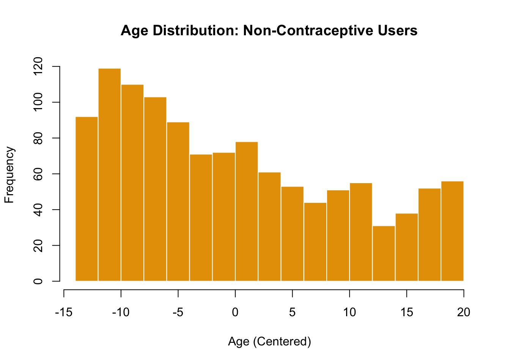

library(mlmRev) ## LOADING OF THE NECESSARY PACKAGES ##
library(tidyverse)
library(MASS)
library(lme4)
library(ggplot2)
library(performance)
library(DHARMa)
library(dotwhisker)
library(coefplot)
library(bbmle)
library(brglm2)
library(brms)
library(arm)
library(lmtest)
library(boot)
library(effects)
library(sjPlot)
library(AER)
library(pscl)
library(patchwork)Project 2
Question 1: Analysis of Contraception Data from the Package mlmRev
Loading the Contraception data and creating a new column called “use_num”. Essentially, the new column is the column use a binary as factor
woman district use livch age urban use_num
1 1 1 N 3+ 18.4400 Y 0
2 2 1 N 0 -5.5599 Y 0
3 3 1 N 2 1.4400 Y 0
4 4 1 N 3+ 8.4400 Y 0
5 5 1 N 0 -13.5590 Y 0
6 6 1 N 0 -11.5600 Y 0
7 7 1 N 3+ 18.4400 Y 0
8 8 1 N 3+ -3.5599 Y 0
9 9 1 N 1 -5.5599 Y 0
10 10 1 N 3+ 1.4400 Y 0a. Data Analysis Description
This dataset originates from the 1988 Bangladesh Fertility Survey and includes a sub-sample of 1,934 women distributed across 60 districts.
According to Harrell’s guidelines [@harrell], the optimal number of predictor variables in a logistic regression model should not exceed \(\frac{m}{15}\), where m represents the limiting sample size, defined as m = nrow(Contraception). Given the current sample size, this criterion allows for the inclusion of the full number of predictor variables in the model.
Furthermore, it is essential to establish a threshold for assessing the significance of predictor variables. In this analysis, a threshold of 5% for the variable age and 10% for the other predictors will be employed. Specifically, if a unit change in any predictor variable results a change greater than 5% or 10%, respectively in the response variable, this effect will be considered statistically significant. (I decided to use different thresholds in every predictor because the units are different and my sense telling me that it is not the same one year of change and an additional kid for example)
My approach involves a basic logistic regression model, which utilizes the binomial family and a logit link function. This model is appropriate given the binary nature of the response variable, use_num, where a value of 1 indicates the use of contraception and 0 indicates non-use.
Predictors:
Centered Age of Women (age):
The first predictor is the centered age of women. Based on intuitive reasoning, it is hypothesized that the relationship between women’s age and contraception use resembles an inverted U-shape. This suggests that both younger and older women are likely to use contraception less frequently than middle-aged women, making age a relevant predictor in the model.Number of Living Children (livch):
The second predictor is the number of living children. It is posited that as individuals find a permanent partner, they tend to use contraception less frequently. Therefore, the presence of children is expected to correlate with contraception usage, making this a reasonable predictor to include in the model.Type of Residence (urban):
The third and final predictor is the type of residence, categorized as urban or rural. Contraception use is strongly correlated with various socio-economic factors. For instance, urban areas that are wealthier tend to have higher levels of education. It is generally observed that individuals with higher educational attainment are more likely to use contraception. Thus, the type of residence is anticipated to be a significant predictor of contraception use.
I decide not to include the district at the first model because I can save a lot of degrees of freedom by using only the type of residence. However, I may lose some important information and eventually, the model’s fit is not good enough
If the first model is inadequate to fit the dataset properly, a second approach would possibly involves a two-level main effect logistic regression model by including a random intercept for each district. This model will capture the variability at the district level, providing more accurate estimates if there are significant differences in contraceptive use between districts. It is widely known that it is especially useful for hierarchical data structures. The model will utilize the binomial family and a logit link function (I am gonna use this model if the overall fit of the first one is not good).
b. Data Visualization
The visualizations include bar plots and histograms that elucidate the relationships between contraceptive use, number of living children, urban or rural residence, district, and the age of women.
# Function to create bar plots for contraceptive use by a given categorical variable
create_bar_plot <- function(data, x_var, x_label) {
ggplot(data, aes(x = .data[[x_var]], fill = factor(use_num))) +
geom_bar(position = "fill") +
labs(x = x_label,
y = "Proportion of Contraceptive Use",
fill = "Contraceptive Use") +
theme_minimal() +
scale_fill_manual(values = c("0" = "#E69F00", "1" = "#56B4E9"),
labels = c("No", "Yes")) +
theme(legend.position = "top")
}
## CONTRACEPTION VS LIVING CHILDREN BAR PLOT
create_bar_plot(Contraception, "livch", "Number of Living Children")
i) Proportion of Contraceptive Use by Number of Living Children
The bar plot depicting the proportion of contraceptive use by the number of living children reveals a clear trend. As the number of living children increases, there is a noticeable variation in the proportion of women using contraception. Specifically, women with fewer children are less likely to use contraception compared to those with more children. This suggests that family size may influence contraceptive decisions, indicating a potential focus area for family planning programs.
ii) Proportion of Contraceptive Use by Urban or Rural Residence
The second bar plot compares contraceptive use between women residing in urban and rural areas. The results show that women living in urban areas have a higher proportion of contraceptive use compared to their rural counterparts.

iii) Proportion of Contraceptive Use by District
The bar plot by district illustrates the variations in contraceptive use across different geographical regions. Each district exhibits unique patterns in contraceptive use, indicating that local policies, health services, and cultural factors may significantly influence these behaviors.
# Function to create histograms for age distribution
create_histogram <- function(data, use_num, color, title) {
hist(data$age[data$use_num == use_num],
xlab = "Age (Centered)",
ylab = "Frequency",
main = title,
col = color,
border = "white")
}
# Create histograms for age distribution and Non-Contraceptive Users
create_histogram(Contraception, 0, "#E69F00", "Age Distribution: Non-Contraceptive Users")
iv) Age Distribution of Non-Contraceptive Users
The histogram showing the age distribution of women who do not use contraception indicates a concentration of non-users in younger age groups. This suggests that younger women may either have limited knowledge about contraceptive options or may not yet feel the need for contraception. Addressing knowledge gaps.

v)Age Distribution of Contraceptive Users
This histogram showcases the age distribution for women who do use contraception, similar to the previous plot but focused on users. As we had anticipated the distribution appears to be more evenly spread across age groups, with a notable presence of users in the middle and older age groups.
create_box_plot <- function(data) {
boxplot(age ~ use_num,
data = data,
xlab = "Contraceptive Use (0 = Non-Users, 1 = Users)",
ylab = "Age (Centered)",
main = "Age Distribution by Contraceptive Use",
col = c("#E69F00", "#56B4E9"),
border = "darkgray")
}
# Create the box plot for age distribution
create_box_plot(Contraception)
c. Model Fit
Call:
glm(formula = use_num ~ age + livch + urban, family = binomial(link = "logit"),
data = Contraception)
Coefficients:
Estimate Std. Error z value Pr(>|z|)
(Intercept) -1.568044 0.126229 -12.422 < 2e-16 ***
age -0.023995 0.007536 -3.184 0.00145 **
livch1 1.059186 0.151954 6.970 3.16e-12 ***
livch2 1.287805 0.167241 7.700 1.36e-14 ***
livch3+ 1.216385 0.170593 7.130 1.00e-12 ***
urbanY 0.797181 0.105186 7.579 3.49e-14 ***
---
Signif. codes: 0 '***' 0.001 '**' 0.01 '*' 0.05 '.' 0.1 ' ' 1
(Dispersion parameter for binomial family taken to be 1)
Null deviance: 2590.9 on 1933 degrees of freedom
Residual deviance: 2456.7 on 1928 degrees of freedom
AIC: 2468.7
Number of Fisher Scoring iterations: 4d. Comparison of the Diagnostic Plots

i) Posterior Predictive Check:
The observed and model-predicted intervals seem close, suggesting a reasonable fit.
ii) Binned Residuals:
The plot shows the model’s errors across the probability range, and most residuals fall within the bounds, meaning no strong deviations, but a few points (in red) indicate areas with potential under- or over-prediction. Looking at the graph, there is possibility for overfitting but not something terrible. A good practice to detect data overfitting is by applying Cross-Validation, Bootstrap Resampling etc.
Below I am going test if there is an overfitting problem to my model by using a Bootstrap Resampling algorithm. This will give us a distribution of model coefficients across different resampled datasets, showing how much they vary.
ORDINARY NONPARAMETRIC BOOTSTRAP
Call:
boot(data = Contraception, statistic = function(data, indices) {
d <- data[indices, ]
fit <- glm(use_num ~ age + livch + urban, data = d, family = binomial(link = "logit"))
return(coef(fit))
}, R = 1000)
Bootstrap Statistics :
original bias std. error
t1* -1.56804374 -0.0067118991 0.123053057
t2* -0.02399512 -0.0001941084 0.007193948
t3* 1.05918582 0.0065718308 0.155691426
t4* 1.28780501 0.0024604551 0.162848757
t5* 1.21638466 0.0035732271 0.165559373
t6* 0.79718138 0.0052819863 0.105728152boot_df <- as.data.frame(boot_fit$t)
names(boot_df) <- names(boot_fit$t0)
boot_long <- boot_df %>%
pivot_longer(everything(), names_to = "term", values_to = "beta")
ci_df <- boot_long %>%
group_by(term) %>%
summarise(
mean = mean(beta),
lo = quantile(beta, 0.025),
hi = quantile(beta, 0.975),
.groups = "drop"
)
ggplot(boot_long, aes(x = beta)) +
geom_histogram(bins = 35) +
facet_wrap(~ term, scales = "free", ncol = 3) +
geom_vline(data = ci_df, aes(xintercept = mean), linewidth = 0.6) +
geom_vline(data = ci_df, aes(xintercept = lo), linetype = "dashed", linewidth = 0.5) +
geom_vline(data = ci_df, aes(xintercept = hi), linetype = "dashed", linewidth = 0.5) +
labs(
title = "Bootstrap distributions of coefficient estimates",
subtitle = "Solid = mean; dashed = 95% percentile interval (R = 1000)",
x = "Coefficient estimate",
y = "Count"
) +
theme_minimal(base_size = 12) +
theme(
plot.title = element_text(face = "bold", hjust = 0.5),
plot.subtitle = element_text(hjust = 0.5)
)
The bias for all coefficients is relatively small, which is a good sign that the bootstrap estimates closely match the original estimates.
The standard errors are also within reasonable ranges, indicating that the coefficients are relatively stable across the bootstrapped samples. However,
livchandurbancoefficients have somewhat higher variability compared toage.
This result suggests that the model is not overfitting, as the coefficients appear stable with small bias and reasonable variability. I run that bootstrap algorithm in order to support the robustness of my model.
iii) Influential Observations:
This plot identifies points with high leverage (potentially influential points) based on the distance of their leverage (horizontal axis) and standardized residuals (vertical axis).
iv) Collinearity:
All predictors have a VIF below 5, which suggests no problematic collinearity that might affect model stability.

i) QQ Plot of Residuals:
Since the residuals fall almost perfectly along the line, this indicates that they are well-behaved and likely normally distributed. The Kolmogorov-Smirnov (KS) test shows no significant deviation from expectations (p-values > 0.05).
ii) Residual vs. Predicted (Rank Transformed):
The random scatter of residuals and lack of any clear pattern indicate that the model fits well, with no significant problems detected.
Eventually, I am not going to use the second model or any adjustment to the model as the first one seems to have a reasonable good fit without violating the assumptions.
e. Results Interpretation and Coefficient/Effect Plots


The log-odds coefficients can be converted into odds ratios (OR) by exponentiating the coefficients. This helps in understanding the percentage change in the odds of the response variable. The odds ratio tells us the multiplicative change in the odds of the outcome for a one-unit change in the predictor. If the odds ratio is above 1, the odds of the event increase; if below 1, the odds decrease.
age: The odds ratio is exp(−0.023995) = 0.976, meaning that for each additional year of age, the odds of using contraception decrease by about 2.4%. This is less than the 5% threshold, so while it’s statistically significant, it did not meet our criteria for a practically significant effect.
livch1: The odds ratio for having one child is exp(1.059) = 2.884, meaning the odds of using contraception are 188.4% higher compared to women with no children and much higher from 10% (our threshold).
livch2: The odds ratio for having two children is exp(1.288) = 3.626, meaning the odds of using contraception are 262.6% higher compared to women with no children and much higher from 10% (our threshold).
livch3+: The odds ratio for having three or more children is exp(1.216) = 3.375, meaning the odds of using contraception are 237.5% higher compared to women with no children and much higher from 10% (our threshold).
urbanY: The odds ratio is exp(0.797) = 2.219, meaning living in an urban area increases the odds of using contraception by 121.9% compared to rural areas and much higher from 10% (our threshold).
The predictors livch and urban have strong and significant effects on the odds of using contraception, with odds ratios well above 1, meaning their effects are both statistically and practically significant based on our 10% threshold.
In the logistic regression model examining the use of contraception (use_num) based on age, livch (number of living children), and urban (urban vs. non-urban), categorical predictors were automatically encoded by R into dummy variables. Specifically, livch and urban are categorical variables, and R created separate coefficients for each level of livch (e.g., livch1, livch2, livch3+), comparing each to a reference category (livch = 0). Similarly, for urban, the coefficient urbanY compares living in an urban area (Y) to the reference group living in a non-urban area (N). These coefficients reflect the change in the log-odds of using contraception compared to the reference categories. This encoding allows for a detailed understanding of how each level of the categorical variables affects the likelihood of using contraception.
Question 2: Analysis of Gopher Tortoise Data
Site year shells type Area density prev year_c
1 BS 2004 0 Fresh 15.2 4.8 1.0 -1
2 BS 2005 0 Fresh 15.2 4.8 1.0 0
3 BS 2006 0 Fresh 15.2 4.8 1.0 1
4 CB 2004 1 Fresh 16.0 2.8 4.3 -1
5 CB 2005 0 Fresh 16.0 2.8 8.0 0
6 CB 2006 1 Fresh 16.0 2.8 17.6 1
7 Cent 2004 0 Fresh 6.9 29.1 28.6 -1
8 Cent 2005 1 Fresh 6.9 29.1 51.9 0
9 Cent 2006 1 Fresh 6.9 29.1 10.7 1
10 CF 2004 9 Fresh 43.2 4.2 80.7 -1a. Data Visualization
# Line plot
ggplot(g_data, aes(x = year, y = shells, color = Site, group = Site)) +
geom_line(size = 1.2) + # Line size for visibility
geom_point(size = 3, shape = 21, fill = "black") + # Points with white fill for better contrast
labs(
title = "Trends in Gopher Shell Counts Over Time by Site",
x = "Year",
y = "Number of Shells",
color = "Site" # Legend title
) +
theme_minimal(base_size = 12) + # Clean theme
theme(
legend.position = "right", # Legend positioning
plot.title = element_text(hjust = 0.5, size = 14, face = "bold"), # Smaller centered title
axis.title = element_text(size = 10), # Axis title size
axis.text = element_text(size = 9) # Axis text size
) +
scale_color_brewer(palette = "Set3") # Color palette
- The first plot shows the variability in shell numbers across different sites and years, with some showing increasing or decreasing trends.
# Scatterplot
ggplot(g_data, aes(x = prev, y = shells, color = type)) +
geom_point(size = 3, alpha = 0.7, shape = 21, fill = "grey") + # Points with transparency
labs(
title = "Relationship Between Shell Counts and Seroprevalence",
x = "Seroprevalence",
y = "Number of Shells",
color = "Type" # Legend title
) +
geom_smooth(se = FALSE, method = "loess", color = "lightblue", formula = y ~ x) + # Smooth line
theme_minimal(base_size = 12) + # Clean theme
theme(
legend.position = "right", # Legend positioning
plot.title = element_text(hjust = 0.5, size = 14, face = "bold"), # Smaller centered title
axis.title = element_text(size = 10), # Axis title size
axis.text = element_text(size = 9) # Axis text size
) +
scale_color_brewer(palette = "Set2") # Color palette
- The second plot suggests a positive correlation between seroprevalence and the number of shells, particularly when seroprevalence is high.
b. Model Fit
In this analysis, the response variable is the count of shells, making a Poisson Regression Model an appropriate choice given the nature of the data. To ensure robust estimation, we will adhere to the rule of requiring at least 10-20 observations per predictor. Therefore, the number of predictors will be minimized to meet this criterion, balancing model complexity and data sufficiency for accurate inference.
Call:
glm(formula = shells ~ year_c + prev + offset(log(Area)), family = poisson(link = "log"),
data = g_data)
Coefficients:
Estimate Std. Error z value Pr(>|z|)
(Intercept) -3.557101 0.241276 -14.743 < 2e-16 ***
year_c -0.229100 0.164966 -1.389 0.165
prev 0.021828 0.004326 5.045 4.52e-07 ***
---
Signif. codes: 0 '***' 0.001 '**' 0.01 '*' 0.05 '.' 0.1 ' ' 1
(Dispersion parameter for poisson family taken to be 1)
Null deviance: 49.800 on 29 degrees of freedom
Residual deviance: 24.317 on 27 degrees of freedom
AIC: 84.172
Number of Fisher Scoring iterations: 5[1] "Dispersion =" "0.900646372066475"
Overdispersion test
data: poisson_model
z = -1.0315, p-value = 0.8488
alternative hypothesis: true dispersion is greater than 1
sample estimates:
dispersion
0.7688125 The dispersion statistic is calculated as 0.901, which is less than 1, indicating that the model does not exhibit overdispersion (The results of the dispersion test further confirm this, with a test statistic of -1.0315 and a p-value of 0.8488), so Poisson-Regression is an appropriate model for the problem.
c. Model Fit Using bbmle
## Transforming year as a factor
g_data <- transform(
g_data,
year = as.factor(year)
)
# Fit the Poisson model using bbmle formula interface
poisson_model_bbmle <- mle2(shells ~ dpois(lambda = exp(b0 + b1 * year_c + b2 * prev + log(Area))),
start = list(b0 = 0, b1 = 0, b2 = 0),
data = g_data)
summary(poisson_model_bbmle)Maximum likelihood estimation
Call:
mle2(minuslogl = shells ~ dpois(lambda = exp(b0 + b1 * year_c +
b2 * prev + log(Area))), start = list(b0 = 0, b1 = 0, b2 = 0),
data = g_data)
Coefficients:
Estimate Std. Error z value Pr(z)
b0 -3.5563450 0.2412167 -14.7434 < 2.2e-16 ***
b1 -0.2283314 0.1649610 -1.3842 0.1663
b2 0.0218136 0.0043262 5.0422 4.601e-07 ***
---
Signif. codes: 0 '***' 0.001 '**' 0.01 '*' 0.05 '.' 0.1 ' ' 1
-2 log L: 78.17166 The results obtained from the Poisson regression models fitted using the glm() function and the bbmle::mle2() function are notably similar, indicating consistency across both methodologies. Furthermore, if the original factor variable for year is employed in the glm() model, the estimates would closely align with those derived from the bbmle approach.
d. Creation of a Negative Log-likelihood Function
# the Negative Log-Likelihood
NGLL <- function(b0, b1, b2) {
lamda <- exp(b0 + b1 * g_data$year_c + b2 * g_data$prev + log(g_data$Area))
negative_log_likelihood <- -sum(dpois(g_data$shells, lambda = lamda, log = TRUE))
return(negative_log_likelihood)
}
## NGLL(0,0,0) ## Test
# Using optim to Minimize the Negative Log-Likelihood
my_optim <- optim(par = c(b0 = 0, b1 = 0, b2 = 0),
fn = function(params)
NGLL(params[1], params[2], params[3]))e. Comparison of Parameters for Different Approaches
## Estimates from poisson_model
poisson_model_params <- coef(poisson_model)
## Estimates from poisson_model_bbmle
poisson_model_bbmle_params <- coef(poisson_model_bbmle)
## Estimates from my_optim
my_optim_params <- my_optim$par
# Creation of a data frame
comparisons <- data.frame(
poisson_model = poisson_model_params,
poisson_model_bbmle = poisson_model_bbmle_params,
my_optim = my_optim_params
)
print(comparisons) poisson_model poisson_model_bbmle my_optim
(Intercept) -3.55710147 -3.55634500 -3.55661473
year_c -0.22909974 -0.22833145 -0.22926177
prev 0.02182806 0.02181357 0.02182335As we expected, the coefficients of all methods are nearly identical.
f. Wald and profile CIs
## WALD CIs for Poisson GLM
# Extract the standard errors and compute the Wald CI
poisson_model_se <- summary(poisson_model)$coefficients[, "Std. Error"]
wald_ci_glm <- confint.default(poisson_model, level = 0.95) # Wald CI from GLM
## WALD CIs for bbmle
# Get standard errors from bbmle fit
poisson_model_bbmle_se <- sqrt(diag(vcov(poisson_model_bbmle)))
wald_ci_bbmle <- cbind(
poisson_model_bbmle_params - 1.96 * poisson_model_bbmle_se,
poisson_model_bbmle_params + 1.96 * poisson_model_bbmle_se
)
## WALD CIs for custom optim fit
# Assume that the Hessian matrix (returned by optim) is an approximation of the covariance matrix
hessian <- optimHess(par = my_optim$par, fn = function(params) NGLL(params[1], params[2], params[3]))
cov_matrix <- solve(hessian)
optim_se <- sqrt(diag(cov_matrix))
# Compute the Wald CIs for optim estimates
wald_ci_optim <- cbind(
my_optim_params - 1.96 * optim_se,
my_optim_params + 1.96 * optim_se
)
## PROFILE CIs for bbmle
profile_ci_bbmle <- confint(poisson_model_bbmle)
## Print Wald CIs and compare
wald_comparison <- data.frame(
Parameter = names(poisson_model_params),
Wald_CI_GLM = paste0(round(wald_ci_glm[, 1], 4), " to ", round(wald_ci_glm[, 2], 4)),
Wald_CI_bbmle = paste0(round(wald_ci_bbmle[, 1], 4), " to ", round(wald_ci_bbmle[, 2], 4)),
Wald_CI_optim = paste0(round(wald_ci_optim[, 1], 4), " to ", round(wald_ci_optim[, 2], 4))
)
print(wald_comparison) Parameter Wald_CI_GLM Wald_CI_bbmle Wald_CI_optim
1 (Intercept) -4.03 to -3.0842 -4.0291 to -3.0836 -4.0293 to -3.0839
2 year_c -0.5524 to 0.0942 -0.5517 to 0.095 -0.5526 to 0.094
3 prev 0.0133 to 0.0303 0.0133 to 0.0303 0.0134 to 0.0303 Parameter Profile_CI_bbmle
1 b0 -4.0618 to -3.1126
2 b1 -0.5554 to 0.0943
3 b2 0.0134 to 0.0304Wald Confidence Intervals Comparison:
Wald CI for GLM: These were calculated based on the standard errors from the GLM output. For example, for the intercept (b0), the Wald CI ranges from -4.03 to -3.08.
Wald CI for bbmle: Similarly calculated using the standard errors from the
bbmlemodel fit, yielding a very similar CI for b0 (-4.0291 to -3.0836), showing that both methods are almost identical in their results.Wald CI for optim: Using the Hessian matrix from
optimas an estimate for the covariance matrix, the Wald CI for the intercept (b0) was again very close to the previous estimates, ranging from -4.0293 to -3.0839.
Conclusion: The Wald CIs are very consistent across all three approaches, indicating that the parameter estimates are robust regardless of the method used to fit the model.
Profile Confidence Intervals (for bbmle):
These CIs were calculated using profile likelihood, which often provides more accurate confidence intervals, particularly for non-linear models or when the parameters are near the boundary of their possible range.
For the intercept (b0), the profile CI ranges from -4.0618 to -3.1126, which is slightly wider than the Wald CIs. Similarly, the CIs for the other parameters (b1 and b2) are also slightly broader compared to the Wald CIs.
Comparison and Interpretation:
Wald vs Profile CIs: Wald CIs assume normality of the estimates and may be narrower, especially when the model is highly non-linear. Profile CIs are generally considered more accurate as they account for the curvature of the likelihood surface. In our case, the profile CIs are slightly wider, suggesting a more conservative estimate of uncertainty around the parameters.
Consistency across methods: The similarity in Wald CIs from GLM, bbmle, and optim suggests that all methods are implemented correctly and are producing nearly identical parameter estimates.
This shows that both Wald and profile CIs are in good agreement, though the profile CIs provide a slightly more conservative interval, as expected. These comparisons also confirm that your implementations across different methods are consistent.
Question 3: Endometrial Data
NV PI EH HG
1 0 13 1.64 0
2 0 16 2.26 0
3 0 8 3.14 0
4 0 34 2.68 0
5 0 20 1.28 0
6 0 5 2.31 0
7 0 17 1.80 0
8 0 10 1.68 0
9 0 26 1.56 0
10 0 17 2.31 0 NV PI EH HG
Min. :0.0000 Min. : 0.00 Min. :0.270 Min. :0.0000
1st Qu.:0.0000 1st Qu.:11.00 1st Qu.:1.180 1st Qu.:0.0000
Median :0.0000 Median :16.00 Median :1.640 Median :0.0000
Mean :0.1646 Mean :17.38 Mean :1.662 Mean :0.3797
3rd Qu.:0.0000 3rd Qu.:21.00 3rd Qu.:2.015 3rd Qu.:1.0000
Max. :1.0000 Max. :49.00 Max. :3.610 Max. :1.0000 In this analysis, the response variable is the Hyperplasia Grade (NG), which is modeled as a binary outcome. The predictors used in the model are the number of vessels (NV), the Progesterone Index, and the Endometrial Index (EH). Based on Harrell’s guidelines for binary logistic regression models [@harrell], the number of observations in the dataset is sufficient to include all selected predictors, ensuring that the model avoids overfitting while maintaining adequate statistical power.
To evaluate the relationship between NG and the predictors, three different modeling approaches will be employed:
Standard Generalized Linear Model (GLM): A logistic regression model will be fitted using the canonical logit link function to estimate the probability of a high hyperplasia grade given the predictor variables.
Bayesian Logistic Regression: A Bayesian approach will be applied to incorporate prior distributions for the model parameters, allowing for the integration of prior knowledge and uncertainty in the parameter estimates.
Bias-Reduced Logistic Regression: This approach will use Firth’s correction or another bias-reduction method to mitigate the small-sample bias often encountered in maximum likelihood estimates in logistic regression, particularly when rare events are present in the binary response.
By comparing these methods, the aim is to assess their performance and suitability for modeling hyperplasia grade under different statistical frameworks, while ensuring robust inference.
##HG vs Number of Vessels (NV)
ggplot(endometrial, aes(x = NV, y = HG)) +
geom_jitter(height = 0.05, width = 0) + # Add some jitter to separate the binary points
geom_smooth(method = "glm", method.args = list(family = "binomial"), se = FALSE, color = "blue", formula = "y ~ x") + # Add logistic regression line
labs(title = "HG vs Number of Vessels",
x = "Number of Vessels (NV)",
y = "Hyperplasia Grade (HG)") +
theme_minimal() +
theme(text = element_text(size = 14)) # Adjust text size for clarity##HG vs Progesterone Index (PI)
ggplot(endometrial, aes(x = PI, y = HG)) +
geom_jitter(height = 0.05, width = 0) +
geom_smooth(method = "glm", method.args = list(family = "binomial"), se = FALSE, color = "green", formula = "y ~ x") +
labs(title = "HG vs Progesterone Index",
x = "Progesterone Index (PI)",
y = "Hyperplasia Grade (HG)") +
theme_minimal() +
theme(text = element_text(size = 14))##HG vs Endometrial Height (EH)
ggplot(endometrial, aes(x = EH, y = HG)) +
geom_jitter(height = 0.05, width = 0) +
geom_smooth(method = "glm", method.args = list(family = "binomial"), se = FALSE, color = "red", formula = "y ~ x") +
labs(title = "HG vs Endometrial Height",
x = "Endometrial Height (EH)",
y = "Hyperplasia Grade (HG)") +
theme_minimal() +
theme(text = element_text(size = 14))Number of Vessels (NV) and Endometrial Height (EH) have strong, nonlinear relationships with hyperplasia grade (HG). On the other hand, Progesterone Index (PI) shows a much weaker and more linear relationship with HG, suggesting that it may be less influential in predicting hyperplasia compared to NV and EH.


Call:
glm(formula = HG ~ NV + PI + EH, family = binomial(link = "logit"),
data = endometrial)
Coefficients:
Estimate Std. Error z value Pr(>|z|)
(Intercept) 4.30452 1.63730 2.629 0.008563 **
NV 18.18556 1715.75089 0.011 0.991543
PI -0.04218 0.04433 -0.952 0.341333
EH -2.90261 0.84555 -3.433 0.000597 ***
---
Signif. codes: 0 '***' 0.001 '**' 0.01 '*' 0.05 '.' 0.1 ' ' 1
(Dispersion parameter for binomial family taken to be 1)
Null deviance: 104.903 on 78 degrees of freedom
Residual deviance: 55.393 on 75 degrees of freedom
AIC: 63.393
Number of Fisher Scoring iterations: 17
Call:
bayesglm(formula = HG ~ NV + PI + EH, family = binomial(link = "logit"),
data = endometrial)
Coefficients:
Estimate Std. Error z value Pr(>|z|)
(Intercept) 3.71159 1.38954 2.671 0.007560 **
NV 3.29816 1.58068 2.087 0.036929 *
PI -0.02904 0.03657 -0.794 0.427261
EH -2.62865 0.73865 -3.559 0.000373 ***
---
Signif. codes: 0 '***' 0.001 '**' 0.01 '*' 0.05 '.' 0.1 ' ' 1
(Dispersion parameter for binomial family taken to be 1)
Null deviance: 104.903 on 78 degrees of freedom
Residual deviance: 56.254 on 75 degrees of freedom
AIC: 64.254
Number of Fisher Scoring iterations: 20
Call:
glm(formula = HG ~ NV + PI + EH, family = binomial(link = "logit"),
data = endometrial, method = "brglmFit")
Deviance Residuals:
Min 1Q Median 3Q Max
-1.4740 -0.6706 -0.3411 0.3252 2.6123
Coefficients:
Estimate Std. Error z value Pr(>|z|)
(Intercept) 3.77456 1.48869 2.535 0.011229 *
NV 2.92927 1.55076 1.889 0.058902 .
PI -0.03475 0.03958 -0.878 0.379915
EH -2.60416 0.77602 -3.356 0.000791 ***
---
Signif. codes: 0 '***' 0.001 '**' 0.01 '*' 0.05 '.' 0.1 ' ' 1
(Dispersion parameter for binomial family taken to be 1)
Null deviance: 104.903 on 78 degrees of freedom
Residual deviance: 56.575 on 75 degrees of freedom
AIC: 64.575
Type of estimator: AS_mixed (mixed bias-reducing adjusted score equations)
Number of Fisher Scoring iterations: 61. Comparison of Estimates:
glm_coefs <- coef(model_glm)
bayesglm_coefs <- coef(model_bayesglm)
brglmFit_coefs <- coef(model_brglmFit)
# Create a comparison data frame
comparison_df <- data.frame(
Coefficient = names(glm_coefs),
GLM = round(glm_coefs, 4),
BayesGLM = round(bayesglm_coefs, 4),
BRGLM = round(brglmFit_coefs, 4)
)
# Print the comparison
print(comparison_df) Coefficient GLM BayesGLM BRGLM
(Intercept) (Intercept) 4.3045 3.7116 3.7746
NV NV 18.1856 3.2982 2.9293
PI PI -0.0422 -0.0290 -0.0348
EH EH -2.9026 -2.6286 -2.6042# Long format
plot_df <- comparison_df %>%
pivot_longer(cols = c(GLM, BayesGLM, BRGLM),
names_to = "Method",
values_to = "Estimate") %>%
mutate(
Method = factor(Method, levels = c("GLM", "BayesGLM", "BRGLM")),
Coefficient = factor(Coefficient, levels = unique(Coefficient))
)
# Portfolio theme (centered titles)
theme_portfolio <- theme_minimal(base_size = 12) +
theme(
plot.title.position = "plot",
plot.title = element_text(face = "bold", size = 15, hjust = 0.5),
plot.subtitle = element_text(hjust = 0.5, margin = margin(b = 8)),
axis.title = element_text(face = "bold"),
panel.grid.minor = element_blank(),
panel.grid.major.y = element_blank(),
strip.text = element_text(face = "bold")
)
# Plot 1: Faceted coefficient comparison (one panel per coefficient)
p1 <- ggplot(plot_df, aes(x = Estimate, y = Method)) +
geom_vline(xintercept = 0, linetype = "dashed", linewidth = 0.6, alpha = 0.8) +
geom_point(size = 2.6) +
geom_text(
aes(label = sprintf("%.3f", Estimate)),
vjust = -0.8,
size = 3
) +
facet_wrap(~ Coefficient, scales = "free_x", nrow = 1) +
labs(
title = "Coefficient estimates across methods",
subtitle = "GLM vs BayesGLM vs BRGLM",
x = "Estimate",
y = NULL
) +
theme_portfolio
# Plot 2: Slope chart per coefficient (separate facets, not mixed)
p2 <- ggplot(plot_df, aes(x = Method, y = Estimate, group = 1)) +
geom_hline(yintercept = 0, linetype = "dashed", linewidth = 0.6, alpha = 0.8) +
geom_line(linewidth = 0.9, alpha = 0.8) +
geom_point(size = 2.4) +
facet_wrap(~ Coefficient, scales = "free_y", ncol = 2) +
labs(
title = "Coefficient profiles by method",
subtitle = "Each panel shows one coefficient; dashed line marks zero",
x = NULL,
y = "Estimate"
) +
theme_portfolio +
theme(axis.text.x = element_text(face = "bold"))
# Combine into ONE figure (two rows) without mixing plots
(p1 / p2) +
plot_annotation(
title = "Comparison of coefficient estimates across estimation methods",
theme = theme(plot.title = element_text(face = "bold", hjust = 0.5, size = 16))
)
The comparison of coefficient estimates from the GLM, BayesGLM, and BRGLM models shows notable differences, particularly for the Intercept and the predictor NV. The GLM model produced a very high estimate for NV (18.1856), suggesting a strong positive effect, while both the BayesGLM (3.2982) and BRGLM (2.9293) models showed much lower estimates, indicating they may mitigate the extreme influence of this predictor. For PI, all models yielded negative estimates, with GLM at -0.0422 and the Bayesian methods being slightly more consistent around -0.0290 and -0.0348. The EH variable also had negative estimates across all models, with GLM showing the most negative effect at -2.9026. Overall, the Bayesian and bias-reduced methods provide more stable and less extreme estimates compared to the traditional GLM, which may be prone to overfitting.
2. Wald and likelihood profile confidence intervals
# Calculate Wald Confidence Intervals for GLM
wald_ci_glm <- confint.default(model_glm, level = 0.95)
wald_ci_glm <- as.data.frame(wald_ci_glm)
colnames(wald_ci_glm) <- c("lower", "upper")
# Calculate Profile Likelihood Confidence Intervals for GLM
profile_ci_glm <- confint(model_glm)
profile_ci_glm <- as.data.frame(profile_ci_glm)
colnames(profile_ci_glm) <- c("lower", "upper")
# Calculate Wald Confidence Intervals for bayesglm
wald_ci_bayesglm <- confint.default(model_bayesglm, level = 0.95)
wald_ci_bayesglm <- as.data.frame(wald_ci_bayesglm)
colnames(wald_ci_bayesglm) <- c("lower", "upper")
# Profile CI for bayesglm may not be straightforward, use the posterior predictive intervals
# Instead, we will stick to the Wald for bayesglm as it is commonly used
# Calculate Wald Confidence Intervals for brglmFit
wald_ci_brglmFit <- confint.default(model_brglmFit, level = 0.95)
wald_ci_brglmFit <- as.data.frame(wald_ci_brglmFit)
colnames(wald_ci_brglmFit) <- c("lower", "upper")
# Calculate Profile Likelihood Confidence Intervals for brglmFit
profile_ci_brglmFit <- confint(model_brglmFit)
profile_ci_brglmFit <- as.data.frame(profile_ci_brglmFit)
colnames(profile_ci_brglmFit) <- c("lower", "upper")
# Create a summary comparison data frame
comparison <- data.frame(
Parameter = rownames(wald_ci_glm),
Wald_CI_GLM = paste0(round(wald_ci_glm$lower, 4), " to ", round(wald_ci_glm$upper, 4)),
Profile_CI_GLM = paste0(round(profile_ci_glm$lower, 4), " to ", round(profile_ci_glm$upper, 4)),
Wald_CI_BayesGLM = paste0(round(wald_ci_bayesglm$lower, 4), " to ", round(wald_ci_bayesglm$upper, 4)),
Wald_CI_brglmFit = paste0(round(wald_ci_brglmFit$lower, 4), " to ", round(wald_ci_brglmFit$upper, 4)),
Profile_CI_brglmFit = paste0(round(profile_ci_brglmFit$lower, 4), " to ", round(profile_ci_brglmFit$upper, 4))
)
# Print the comparison table
print(comparison) Parameter Wald_CI_GLM Profile_CI_GLM Wald_CI_BayesGLM
1 (Intercept) 1.0955 to 7.5136 1.4332 to 7.955 0.9881 to 6.435
2 NV -3344.6244 to 3380.9955 -69.2281 to 506.1938 0.2001 to 6.3962
3 PI -0.1291 to 0.0447 -0.1371 to 0.0382 -0.1007 to 0.0426
4 EH -4.5599 to -1.2454 -4.786 to -1.4366 -4.0764 to -1.1809
Wald_CI_brglmFit Profile_CI_brglmFit
1 0.8568 to 6.6923 0.8568 to 6.6923
2 -0.1102 to 5.9687 -0.1102 to 5.9687
3 -0.1123 to 0.0428 -0.1123 to 0.0428
4 -4.1251 to -1.0832 -4.1251 to -1.0832ci_df <- bind_rows(
# GLM
data.frame(
Parameter = rownames(wald_ci_glm),
lower = wald_ci_glm$lower,
upper = wald_ci_glm$upper,
Method = "GLM",
CI_Type = "Wald"
),
data.frame(
Parameter = rownames(profile_ci_glm),
lower = profile_ci_glm$lower,
upper = profile_ci_glm$upper,
Method = "GLM",
CI_Type = "Profile"
),
# BayesGLM (Wald only)
data.frame(
Parameter = rownames(wald_ci_bayesglm),
lower = wald_ci_bayesglm$lower,
upper = wald_ci_bayesglm$upper,
Method = "BayesGLM",
CI_Type = "Wald"
),
# brglmFit
data.frame(
Parameter = rownames(wald_ci_brglmFit),
lower = wald_ci_brglmFit$lower,
upper = wald_ci_brglmFit$upper,
Method = "BRGLM",
CI_Type = "Wald"
),
data.frame(
Parameter = rownames(profile_ci_brglmFit),
lower = profile_ci_brglmFit$lower,
upper = profile_ci_brglmFit$upper,
Method = "BRGLM",
CI_Type = "Profile"
)
) %>%
filter(Parameter != "(Intercept)") %>%
mutate(
Parameter = factor(Parameter, levels = rev(unique(Parameter))),
CI_Type = factor(CI_Type, levels = c("Wald", "Profile"))
)
ggplot(ci_df, aes(x = (lower + upper) / 2, y = Parameter)) +
geom_vline(xintercept = 0, linetype = "dashed", linewidth = 0.6, alpha = 0.7) +
geom_errorbarh(
aes(xmin = lower, xmax = upper, color = CI_Type),
height = 0.25,
position = position_dodge(width = 0.6)
) +
geom_point(
aes(color = CI_Type),
position = position_dodge(width = 0.6),
size = 2
) +
facet_wrap(~ Method, nrow = 1) +
labs(
title = "Comparison of confidence intervals across estimation methods",
subtitle = "Wald vs profile likelihood intervals for logistic regression coefficients",
x = "Coefficient estimate",
y = NULL,
color = "CI type"
) +
theme_minimal(base_size = 12) +
theme(
plot.title = element_text(face = "bold", hjust = 0.5),
plot.subtitle = element_text(hjust = 0.5),
strip.text = element_text(face = "bold"),
panel.grid.minor = element_blank()
)
The comparison of the Wald and profile likelihood confidence intervals (CIs) across the three logistic regression models reveals important insights into the parameter estimates’ uncertainty. For the GLM model, the Wald CIs are notably wider for the NV parameter, suggesting significant uncertainty, while the profile CIs are narrower, indicating a more concentrated estimate around the true parameter value. The profile CIs for both models show that the lower bound for NV is negative, raising concerns about potential non-identifiability in this parameter. In contrast, the bayesglm model presents relatively consistent Wald CIs, indicating robustness, though it lacks a profile CI due to complexities in Bayesian frameworks. For the brglmFit model, both the Wald and profile CIs provide nearly identical ranges, reflecting the model’s stability in estimating the parameters. Overall, the profile likelihood CIs generally offer a more refined estimate compared to the Wald CIs, particularly for the NV parameter, emphasizing the value of profiling in models with potential non-linearity or parameter constraints.
3. Wald and likelihood ratio-test p-values for all three (non-intercept) coefficients
# Function to extract Wald p-values
wald_p_values <- function(model) {
coefs <- summary(model)$coefficients
p_values <- 2 * (1 - pnorm(abs(coefs[, "Estimate"] / coefs[, "Std. Error"])))
return(p_values[-1]) # Exclude the intercept
}
# Extract Wald p-values
wald_p_glm <- wald_p_values(model_glm)
wald_p_bayesglm <- wald_p_values(model_bayesglm)
wald_p_brglmFit <- wald_p_values(model_brglmFit)
# Likelihood Ratio Tests
lrt_glm <- anova(model_glm, test = "LRT")
lrt_bayesglm <- anova(model_bayesglm, test = "LRT")
lrt_brglmFit <- anova(model_brglmFit, test = "LRT")
# Extract LRT p-values
lrt_p_glm <- lrt_glm$`Pr(>Chi)`[-1] # Exclude the intercept
lrt_p_bayesglm <- lrt_bayesglm$`Pr(>Chi)`[-1] # Exclude the intercept
lrt_p_brglmFit <- lrt_brglmFit$`Pr(>Chi)`[-1] # Exclude the intercept
# Combine Wald and LRT p-values
comparison <- data.frame(
Coefficient = names(wald_p_glm),
Wald_p_GLM = wald_p_glm,
Wald_p_BayesGLM = wald_p_bayesglm,
Wald_p_BrglmFit = wald_p_brglmFit,
LRT_p_GLM = lrt_p_glm,
LRT_p_BayesGLM = lrt_p_bayesglm,
LRT_p_BrglmFit = lrt_p_brglmFit
)
# Print the comparison table
print(comparison) Coefficient Wald_p_GLM Wald_p_BayesGLM Wald_p_BrglmFit LRT_p_GLM
NV NV 0.9915432347 0.0369292945 0.0589021443 5.322163e-08
PI PI 0.3413329906 0.4272605796 0.3799145349 6.957899e-01
EH EH 0.0005973924 0.0003726778 0.0007913435 8.777197e-06
LRT_p_BayesGLM LRT_p_BrglmFit
NV 5.322163e-08 8.687300e-08
PI 6.957899e-01 8.219755e-01
EH 1.377741e-05 9.394201e-06# Tidy p-values
pval_df <- comparison %>%
pivot_longer(
cols = -Coefficient,
names_to = "Test",
values_to = "p_value"
) %>%
separate(Test, into = c("Type", "Method"), sep = "_p_") %>%
mutate(
Method = factor(Method, levels = c("GLM", "BayesGLM", "BrglmFit")),
Type = factor(Type, levels = c("Wald", "LRT")),
Coefficient = factor(Coefficient, levels = rev(unique(Coefficient))),
# Label formatting: scientific for very small p-values
p_label = ifelse(p_value < 0.001, format(p_value, scientific = TRUE, digits = 2),
sprintf("%.3f", p_value))
)
# Portfolio theme (centered title)
theme_portfolio <- theme_minimal(base_size = 12) +
theme(
plot.title.position = "plot",
plot.title = element_text(face = "bold", size = 15, hjust = 0.5),
plot.subtitle = element_text(hjust = 0.5, margin = margin(b = 8)),
axis.title = element_text(face = "bold"),
strip.text = element_text(face = "bold"),
panel.grid.minor = element_blank(),
panel.grid.major.y = element_blank()
)
ggplot(pval_df, aes(x = p_value, y = Coefficient, color = Type)) +
geom_vline(xintercept = 0.05, linetype = "dashed", linewidth = 0.6, alpha = 0.8) +
geom_point(size = 2.7, position = position_dodge(width = 0.6)) +
geom_text(
aes(label = p_label),
position = position_dodge(width = 0.6),
vjust = -0.9,
size = 3,
show.legend = FALSE
) +
facet_wrap(~ Method, nrow = 1) +
scale_x_log10(
breaks = c(1, 0.1, 0.01, 0.001, 1e-4),
labels = c("1", "0.1", "0.01", "0.001", "1e-4"),
limits = c(1e-5, 1)
) +
labs(
title = "Wald vs Likelihood Ratio Test p-values",
subtitle = "Dashed line indicates the 0.05 significance threshold",
x = "p-value",
y = NULL,
color = "Test"
) +
theme_portfolio
The comparison of Wald and likelihood ratio test (LRT) p-values for the coefficients of the models reveals some significant insights. For the variable NV, the Wald p-values across the three models (GLM: 0.992, BayesGLM: 0.037, BrglmFit: 0.059) indicate that NV is not statistically significant in the GLM, while it shows significance in the other two models, particularly in BayesGLM. However, the LRT p-values confirm NV’s strong significance across all models, with values close to zero (e.g., GLM: 5.32×10−85.32, BayesGLM: 5.32×10−85.32, BrglmFit: 8.69×10−88.69. For the PI variable, all models yield high Wald p-values (ranging from 0.341 to 0.427), indicating non-significance, which is corroborated by the LRT p-values (GLM: 0.696, BayesGLM: 0.696, BrglmFit: 0.822). In contrast, EH shows a notable discrepancy, with Wald p-values suggesting significance (ranging from 0.0006 to 0.0008), while LRT p-values reinforce this finding with values below 0.0001, affirming EH as a significant predictor in all three models. Overall, the LRT p-values provide a more consistent measure of significance across the models, particularly for NV and EH, while the Wald p-values indicate variability in significance for NV depending on the modeling approach used.
Differences in results arise from the estimation techniques used, how each method handles sample size and data characteristics, the incorporation of prior information in Bayesian approaches, and the robustness of the confidence intervals and p-values generated by each method.
Question 4: Zero-inflation by simulation
Call:
glm.nb(formula = art ~ fem + mar + kid5 + phd + ment, data = bioChemists,
init.theta = 2.264387695, link = log)
Coefficients:
Estimate Std. Error z value Pr(>|z|)
(Intercept) 0.256144 0.137348 1.865 0.062191 .
femWomen -0.216418 0.072636 -2.979 0.002887 **
marMarried 0.150489 0.082097 1.833 0.066791 .
kid5 -0.176415 0.052813 -3.340 0.000837 ***
phd 0.015271 0.035873 0.426 0.670326
ment 0.029082 0.003214 9.048 < 2e-16 ***
---
Signif. codes: 0 '***' 0.001 '**' 0.01 '*' 0.05 '.' 0.1 ' ' 1
(Dispersion parameter for Negative Binomial(2.2644) family taken to be 1)
Null deviance: 1109.0 on 914 degrees of freedom
Residual deviance: 1004.3 on 909 degrees of freedom
AIC: 3135.9
Number of Fisher Scoring iterations: 1
Theta: 2.264
Std. Err.: 0.271
2 x log-likelihood: -3121.917 
# Set seed for reproducibility
set.seed(123)
# Simulate new responses from the negative binomial model
sim_vals <- simulate(nb_model, nsim = 1000)
# Calculate the number of zeros in each simulation and in the observed data
zeros_sim <- colSums(sim_vals == 0)
zeros_obs <- sum(bioChemists$art == 0)
# Create a histogram of the number of zeros in the simulated data
hist(zeros_sim, breaks = 30, main = "Distribution of Simulated Zeros",
xlab = "Number of Zeros", col = "skyblue", border = "black",
xlim = range(c(zeros_sim, zeros_obs), na.rm = TRUE),
freq = FALSE)
# Add a vertical line representing the observed number of zeros
abline(v = zeros_obs, col = "red", lwd = 2, lty = 2)
# Overlay the normal distribution curve for reference
curve(dnorm(x, mean = mean(zeros_sim), sd = sd(zeros_sim)),
add = TRUE, col = "darkgreen", lwd = 2)
After simulating 1000 new responses from your fitted model, the distribution of zeros in the simulated datasets closely follows a normal curve. The vertical red line shows the actual number of zeros in the observed data. The fact that the observed zeros align well with the center of the distribution suggests that the model captures the number of zeros in the data quite well.
P-value from simulation: 0.6 
P-value from DHARMa test: 0.856 The calculated p-value based on the simulated zeros is 0.6. This indicates that the observed number of zeros is not unusually high or low compared to the simulated datasets, further confirming that the model appropriately accounts for the zeros in the data.
The calculated p-value based on the simulated zeros is 0.6. This indicates that the observed number of zeros is not unusually high or low compared to the simulated datasets, further confirming that the model appropriately accounts for the zeros in the data. The test returns a p-value of 0.856, which is well above the typical 0.05 threshold. This high p-value strongly suggests that there is no evidence of zero-inflation in the data. In other words, the number of zeros predicted by the model is consistent with what was observed, and there is no need for a more complex model (like a zero-inflated model).
Therefore, our model appropriately explains the factors influencing article production among biochemistry students, with gender, number of kids under 5, and mentorship being the key drivers.